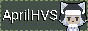

April Rivenend
(a.k.a. "April Rivers")
(they/them preferred)
April Rivenend is a western genderqueer self-taught musician, blog writer & modder.
They mainly persue what they want and make/drop projects as they please.
Navigation
Projects
Visit a friend!


Other Cool Sites

Links with no button
* AntlerEgo* Benji

Hey! Did you like my site? Consider taking my button with you!
Above is what it looks like, and copying the text below will
give you
a version of my button to put on your site!